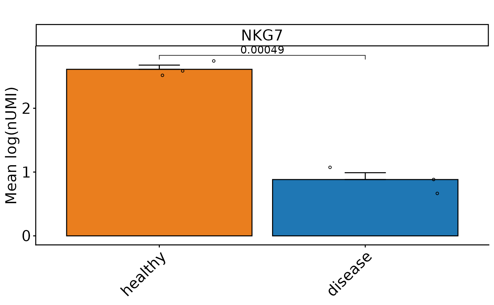

Perform SEM-based graphs with t-test on cluster level for Seurat objects. Calculates mean expression values and SEM for selected features, and visualizes them. Performs pairwise t-tests comparing conditions, with optional custom control condition and clustering. Optionally returns a summary data frame.
Usage
DO.BarplotClustert(
sce_object,
Feature,
ListTest = NULL,
returnValues = FALSE,
ctrl.condition = NULL,
group.by = "condition",
returnPlot = TRUE,
bar_colours = NULL,
stat_pos_mod = 1.15,
step_mod = 0.2,
x_label_rotation = 45,
y_limits = NULL,
log1p_nUMI = TRUE
)Arguments
- sce_object
Combined SCE object or Seurat
- Feature
gene name
- ListTest
List for which conditions t-test will be performed, if NULL always against provided CTRL
- returnValues
return df.melt.sum data frame containing means and SEM for the set group
- ctrl.condition
set your ctrl condition, relevant if running with empty comparison List
- group.by
select the seurat object slot where your conditions can be found, default conditon
- returnPlot
IF TRUE returns ggplot
- bar_colours
colour vector
- stat_pos_mod
Defines the distance to the graphs of the statistic
- step_mod
Defines the distance between each statistics bracket
- x_label_rotation
Rotation of x-labels
- y_limits
set limits for y-axis
- log1p_nUMI
If nUMIs should be log1p transformed
Examples
sce_data <- readRDS(system.file("extdata", "sce_data.rds", package = "DOtools"))
set.seed(123)
sce_data$orig.ident <- sample(rep(c("A", "B", "C"), length.out = ncol(sce_data)))
ListTest <- list()
ListTest[[1]] <- c("healthy", "disease")
DO.BarplotClustert(
sce_object = sce_data,
Feature = "NKG7",
ListTest = ListTest,
ctrl.condition = "healthy",
group.by="condition"
)
#> Warning: `PackageCheck()` was deprecated in SeuratObject 5.0.0.
#> ℹ Please use `rlang::check_installed()` instead.
#> ℹ The deprecated feature was likely used in the Seurat package.
#> Please report the issue at <https://github.com/satijalab/seurat/issues>.
#> Warning: The `slot` argument of `SetAssayData()` is deprecated as of SeuratObject 5.0.0.
#> ℹ Please use the `layer` argument instead.
#> ℹ The deprecated feature was likely used in the Seurat package.
#> Please report the issue at <https://github.com/satijalab/seurat/issues>.
#> Using condition, orig.ident as id variables
